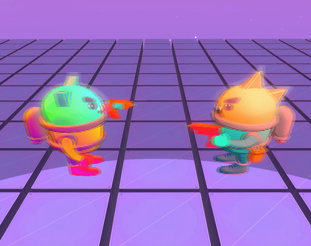
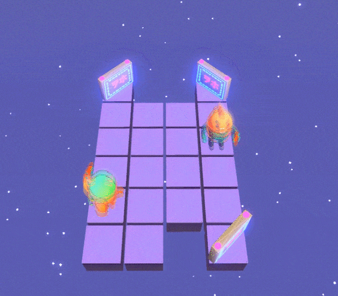
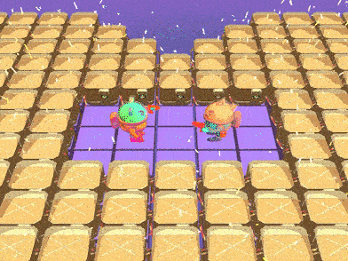

SGD Jam II · 2020 · Winner — Mechanics
Blaster Buds
A duel of wits where your rivalmirrors your every move.
Play on itch.io
01
THE GAME
Blaster Buds is a duel of wits on a grid, set in the vacuum of space. You and your mirrored opponent share every input — move and it moves, shoot and it shoots. Victory never comes from outgunning the other side; it comes from reading the level and making the environment fight for you.
02
ONE INPUT, TWO AGENTS
The mirror mechanic means every level is designed twice at once: each tile placed for the player is also a tile placed for the opponent. Asymmetric level geometry becomes the only source of advantage, which turns level design into the game's real antagonist — exactly why the jam awarded it Best Mechanics.
03
WHAT I DESIGNED
- The mirrored-action core mechanic and its rule set (movement, shooting, hazards).
- Puzzle levels ordered as a difficulty curve that teaches through play, not tutorials.
- Hazard vocabulary — asteroids, walls and pits that convert symmetry into strategy.


